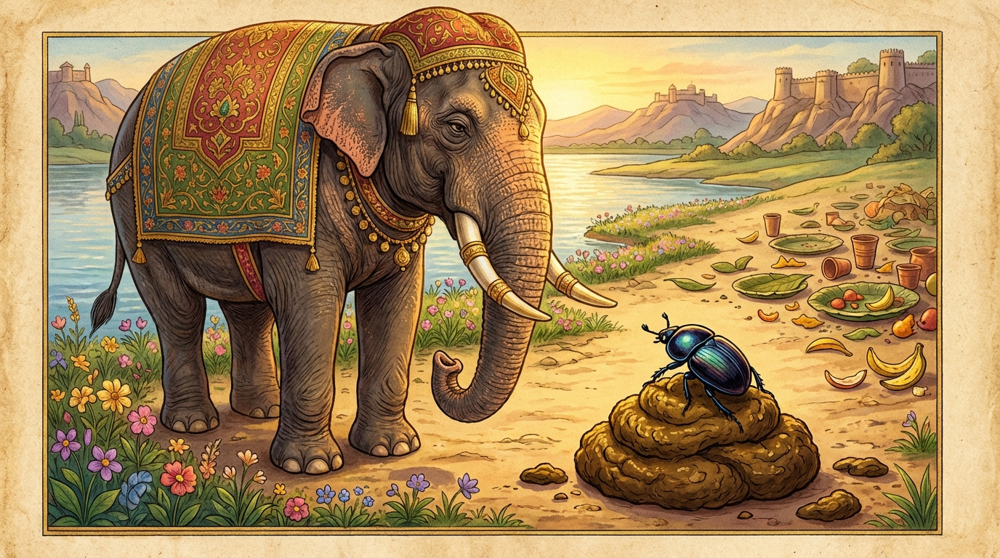

7. ගූථපාණ ජාතකය (227)
“සූරො සූරෙන සංගම්ම” යන මේ දේශනාව බුදුරජාණන් වහන්සේ ජේතවනාරාමයේ වැඩවාසය කරන සමයෙහි එක්තරා භික්ෂුවක් අරබයා වදාළ සේක. එකල ජේතවනාරාමයේ සිට ගව්වක් හා අඩ යොදුනක් (ගව් තුනක්) පමණ ඈතින් එක් නියම්ගමක් විය. එහි බොහෝ සලාක බත් (පැවරූ දානය) සහ පක්ෂයකට වරක් දෙන පක්ඛික බත් ද ඇත. එහි ප්රශ්න අසන එක්තරා කොර මිනිසෙක් වාසය කරයි. ඔහු සලාක බත් හෝ පක්ඛික බත් පිළිගැනීමට පැමිණි නවක භික්ෂූන්ගෙන්ද සාමණේර හිමිවරුන්ගෙන්ද “කවුරු කත්ද? කවුරු බොත්ද? කවුරු අනුභව කරත්ද?” යනාදී වශයෙන් ප්රශ්න අසා, ඊට පිළිතුරු දීමට නොහැකි වූ අයව ලජ්ජාවට පත් කළේය. ඒ භික්ෂු සාමණේර හිමිවරු ඔහුට ඇති බිය නිසා සලාක බත් හෝ පක්ඛික බත් ලබා ගැනීමට ඒ ගමට නොයති. ඉක්බිති එක් දිනක් එක් භික්ෂුවක් සලාක බෙදන ස්ථානයට ගොස් “ස්වාමීනි, අසවල් ගමෙහි සලාක බත් හෝ පක්ඛික බත් හෝ ඇද්දැයි?” විමසා සිටියේය. “ඇවැත්නි, ඇත. එහෙත් එහි එක් කොර මිනිසෙක් සිටියි. ඔහු ප්රශ්න අසයි. උත්තර දීමට නොහැකි වූ අයට ආක්රෝෂ පරිභව කරයි. ඒ නිසා ඔහුට බියෙන් කිසිවෙකු එහි යන්නට කැමති නැතැයි” කී කල්හි, “ස්වාමීනි, එහි දානය මට ලබා දෙන්න. මම ඔහු දමනය කොට එතැන් පටන් ඔබ වහන්සේලා දුටු විට පලා යන කෙනෙකු බවට පත් කරන්නෙමියි” කීය. භික්ෂූහු “යහපතැයි” පිළිගෙන උන්වහන්සේට එහි සලාක බත පැවරූහ.
ඒ භික්ෂූන් වහන්සේ එහි වැඩමවා ගම් දොරටුවේදී සිවුරු පොරවා ගත්හ. උන්වහන්සේ දැක ප්රශ්න අසන කොර මිනිසා නපුරු බැටළුවෙකු මෙන් වේගයෙන් ළඟට අවුත්, “ශ්රමණයන් වහන්ස, මගේ ප්රශ්නයට පිළිතුරු දෙන්නැ”යි කීවේය. “උපාසකයෙනි, ගමෙහි පිණ්ඩපාතයේ වැඩම කර කැඳ ලබාගෙන ආසන ශාලාවට එන තෙක් මට ඉඩ දෙන්නැ”යි උන්වහන්සේ පැවසූහ. ඔහු කැඳ ලබාගෙන ආසන ශාලාවට පැමිණි භික්ෂුවට නැවතත් එසේම කීවේය. ඒ භික්ෂූන් වහන්සේද ඔහුට “මට කැඳ වළඳන තෙක් ඉඩ දෙන්න, ආසන ශාලාව අමදින තෙක් ඉඩ දෙන්න, සලාක බත ලබාගෙන එනතෙක් ඉඩ දෙන්නැ”යි පවසා, සලාක බත ගෙනවුත් අනුභව කොට, ඔහු ලවාම පාත්රය ගෙන්වාගෙන, “එව, නුඹේ ප්රශ්නවලට උත්තර දෙන්නෙමියි” පවසා ගමින් බැහැරට කැඳවාගෙන ගොස්, සිවුර ඒකාංශ කොට පොරවා, ඔහුගේ අතින් පාත්රය ගෙන පසෙක තැබූහ. එහිදීද ඔහු ඒ භික්ෂුවට “ශ්රමණය, මගේ ප්රශ්නයට උත්තර කියන්නැ”යි කීවේය. ඉක්බිති උන්වහන්සේ “නුඹට ප්රශ්නයට පිළිතුරු කියන්නෙමි”යි කියා එක පහරින්ම ඔහු බිම හෙළා, ඇට කුඩු කරමින් තලන්නාක් මෙන් පහර දී, කටෙහි අසූචි දමා, “මෙතැන් පටන් මේ ගමට වඩින කිසිම භික්ෂුවකගෙන් ප්රශ්න ඇසුවොත් (නුඹට කරන දේ) බලාගන්නෙමි”යි තර්ජනය කොට පිටව ගියහ. ඔහු එතැන් පටන් භික්ෂූන් දුටු විටම පලා යයි. පසු කලෙක ඒ භික්ෂුවගේ ක්රියාව භික්ෂු සංඝයා අතර ප්රකට විය. ඉක්බිති එක් දිනක් දම්සභාවේදී “ඇවැත්නි, අසවල් භික්ෂුව වනාහි ප්රශ්න අසා භික්ෂූන් පීඩාවට පත් කළ කොර මිනිසාගේ කටෙහි අසූචි දමා ගියේය”යි කථාවක් ඇති විය. බුදුරජාණන් වහන්සේ එහි වැඩමවා “මහණෙනි, කවර කථාවකින් යුක්තව මෙහි දැන් සිටියාහුදැ”යි විචාරා, “මෙනම් කථාවෙනැ”යි කී කල්හි, “මහණෙනි, ඒ භික්ෂුව ඔහුට අසූචිවලින් හිරිහැර කළේ දැන් පමණක් නොවේ, පෙරත් හිරිහැර කළේය”යි වදාරා අතීත කථාව ගෙනහැර දැක්වූ සේක.
යටගිය දවස අංග මගධ වැසියෝ එකිනෙකාගේ රටවලට යන්නාහු එක් දිනක් දෙරටේ සීමාවෙහි පිහිටි විලක් අසල නවාතැන් ගෙන, සුරා පානය කොට, මස් මාළු අනුභව කොට, උදෙන්ම කරත්ත යොදාගෙන පිටත්ව ගියහ. ඔවුන් ගිය පසු එක් අසූචි කන පණුවෙක් (ගොම ගුලෙක්) අසූචි ගඳට අවුත්, මගීන් විසින් සුරාපානය කළ ස්ථානයේ ඉවත දමන ලද සුරාව දැක පිපාසිතව එය පානය කොට, මත් වී අසූචි ගොඩක් මතට නැංගේය. තෙත අසූචි ගොඩ මත නැඟි විට එය බරට මඳක් එබී ගියේය. එවිට “පොළොවට මා දරා සිටීමට නොහැකිය”යි ඔහු කෑගැසුවේය. ඒ අවස්ථාවේදී මද වෑහෙන ඇතෙක් ඒ ප්රදේශයට පැමිණ, අසූචි ගඳ දැනී පිළිකුල් කරමින් ආපසු හැරුණේය. පණුවා එය දැක “මොහු මා දැක බියෙන් පලා යන්නේය. එබැවින් මොහු සමඟ යුද්ධ කරන්නට වටින්නේය”යි සිතා ඇතාට අභියෝග කරමින් පළමු ගාථාව කීවේය.

“සූරො සූරෙන සංගම්ම - වික්කන්තෙන පහාරිනා,
එහි නාග නිවත්තස්සු - කින්නු භීතො පලායසි,
පස්සන්තු අංග මගධා -
මම තුය්හඤ්ච වික්කමං”
(අර්ථය):
“ශූරතාවයෙන් යුක්ත වූ, වික්රම ස්වභාව ඇති, පහර දෙන්නා වූ පුරුෂයෙකු
සමග තවත් ශූර පුරුෂයෙකු (වන මා) එක් තැනකට පැමිණි කල්හි, (ඔවුනොවුන් සටන් නොකොට යාම සුදුසු නැත). එබැවින්
ඇත්රජුනි! මෙහි එන්න. නවතින්න. කුමට බිය වී පලායන්නෙහිද? මගේද නුඹේද වික්රමය අංග-මගධ දෙරට වැසියෝම බලා
ගනිත්වා!”
එහි අර්ථය මෙසේය: නුඹ සූරො (ශූර වූයේ), සූරෙන සද්ධිං (ශූර වූ මා සමග එක්ව), වික්කන්තෙන (වීර්යයෙන් හා වික්රමයෙන් යුත්), පහාරිනා (පහර දීමට සමත් බැවින්), කුමක් නිසා යුද්ධ නොකරම යන්නෙහිද? එක් පහරක් හෝ දිය යුතු නොවේද? ඒ නිසා එහි නාග නිවත්තස්සු (ඇතුනි! එන්න, නවතින්න), මෙපමණකින්ම මරණ බියෙන් තැති ගත්තෙක් වී කින්නු භීතො පලායසි (කුමක් හෙයින් බියෙන් පලා යන්නෙහිද?), පස්සන්තු අංගමගධා මම තුය්හඤ්ච වික්කමං (මේ සීමාව අතර කොට වසන අංග මගධ දෙරටේම වැසියෝ අප දෙදෙනාගේම පරාක්රමය බලත්වා!)
ඒ ඇතා කන් දී පණුවාගේ වචන අසා, නැවතී, ඌ ළඟට ගොස් ඌට අවමන් කරමින් දෙවන ගාථාව කීවේය.
“න තං පාදා වධිස්සාමි - න දන්තෙහි න සොණ්ඩියා,
මීළ්හෙන තං වධිස්සාමි - පූති හඤ්ඤතු
පූතිනා”
(අර්ථය):
“නුඹ මාගේ පාදයෙන් නොමරමි. දළවලින්ද නොමරමි. සොඬිනුත් නොමරමි. අසූචියෙන්ම තාව මරමි.
අසූචියෙන් අසූචියම නසනු ලැබේවා!”
එහි අර්ථය නම්: නුඹ පා ආදියෙන් නොමරමි. නුඹට සුදුසු වූ අසූචිවලින්ම නුඹ මරන්නෙමි යනුයි.
මෙසේ කියා “කුණු අසූචි පණුවා අසූචියෙන්ම මරනු ලැබේවා”යි පවසා, පණුවා මත විශාල වසුරු පිඩක් හෙළා, මුත්රා විසුරුවා, ඌ එතැනම මරණයට පත් කොට, කුංචනාද පවත්වමින් කැලයටම පිවිසියේය.
බුදුරජාණන් වහන්සේ මේ ධර්ම දේශනාව ගෙනහැර දක්වා ජාතක කථාව නිමවා වදාළ සේක. “එදා අසූචි පණුවා වූයේ මේ කොර මිනිසාය. ඇතා වූයේ ඒ භික්ෂුවයි. ඒ සිද්ධිය ප්රත්යක්ෂ වශයෙන් දැක ඒ වන ලැහැබෙහි විසූ දෙවියා වනාහි මම ම වූවෙමි”යි වදාළ සේක.
හත්වන ගූථපාණ ජාතක වර්ණනාවයි.